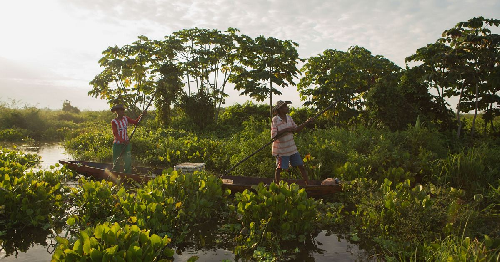
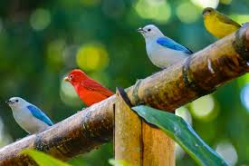
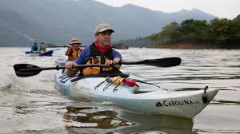
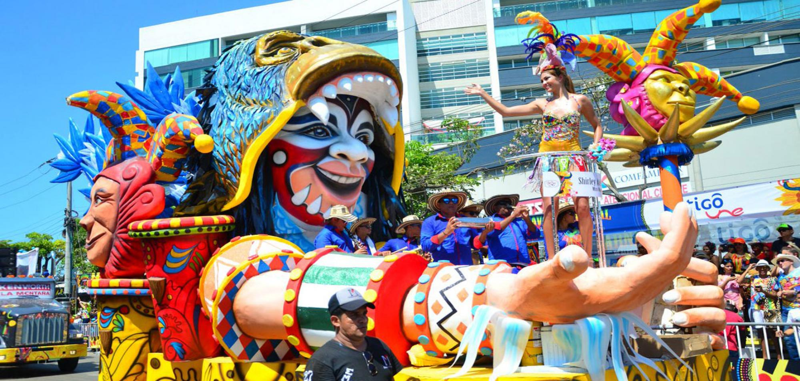
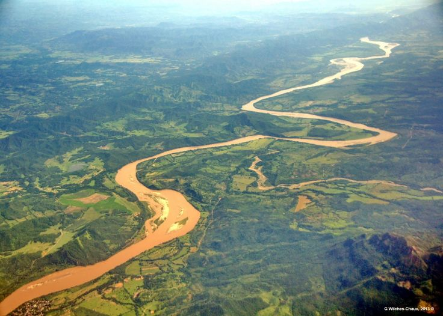
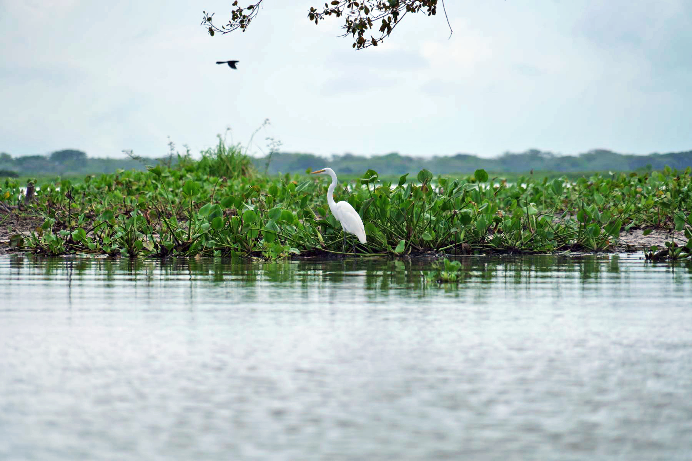
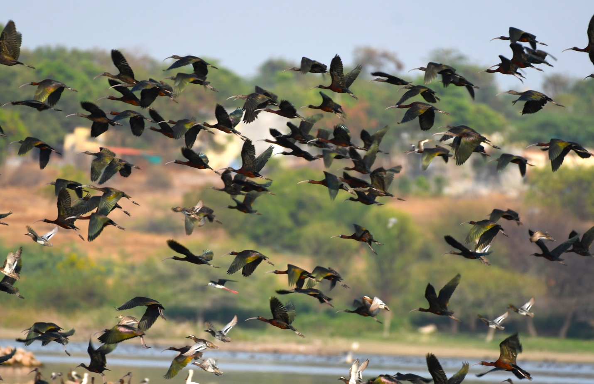
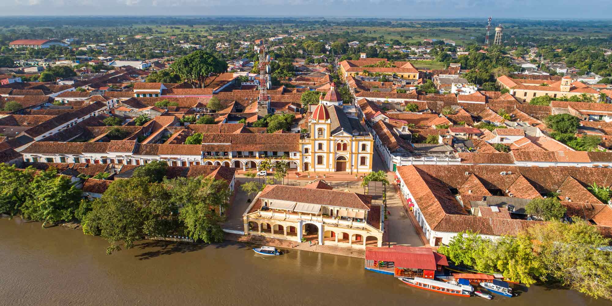
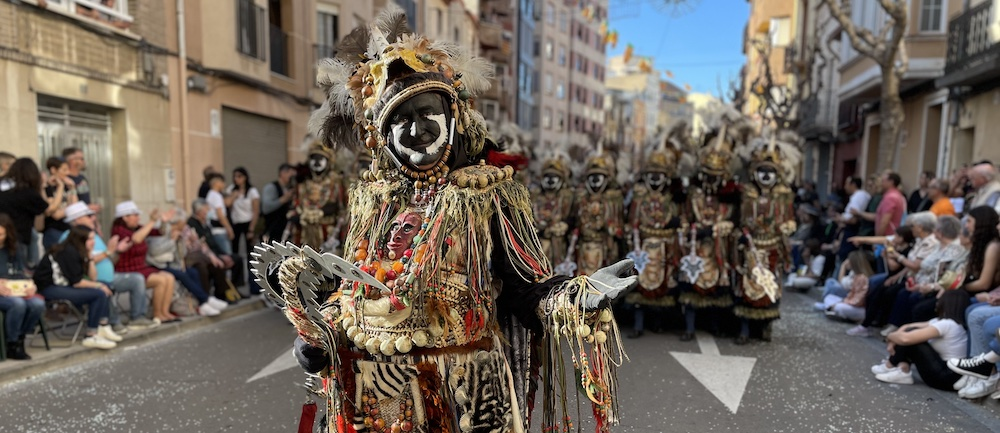

© ProColombiaThe best time to visit the Magdalena Delta is during the dry season, running from December through March. Skies are clear, the wetlands begin to recede, and wildlife concentrates around the remaining water channels, creating exceptional conditions for birdwatching and wildlife encounters throughout the coastal lagoons and ciénagas of northern Colombia.
If you are drawn to Colombia's extraordinary cultural energy, time your visit for late January and early February, when Barranquilla erupts into the world-famous Carnival. Four electrifying days of cumbia, mapalé, and comparsas rival even Rio de Janeiro. The city transforms into a riot of colour, music, and warmth that is unmistakably Caribbean.

© Parques Nacionales ColombiaThe Magdalena Delta is one of South America's most significant wetland ecosystems. Its mosaic of mangrove forests, freshwater lagoons, and coastal marshes shelters over 300 bird species, including the spectacular scarlet ibis, the jabiru stork, and countless herons and egrets that wheel over the water at sunrise in scenes that feel almost prehistoric.
Beneath the surface, the Magdalena River is home to the critically endangered Magdalena River turtle and several endemic freshwater fish species found nowhere else on Earth. West Indian manatees glide silently through the quieter backwaters, and the surrounding dry tropical forest shelters howler monkeys, capybaras, and the elusive ocelot. This is a destination that rewards those who slow down.

© Colombia TravelThe Río Magdalena is Colombia's lifeline, a 1,528-kilometre artery that drains the heart of the Andes and empties into the Caribbean Sea near Barranquilla. Its lower delta is a spectacular maze of shifting channels, oxbow lakes, and the vast Ciénaga Grande de Santa Marta, one of the largest coastal lagoons in Latin America.
Exploring the delta by wooden lancha boat is unforgettable. Narrow waterways open past stilted fishing villages where communities have lived in harmony with the river for centuries. And rising dramatically on the horizon, snow-capped and impossibly close to the sea, stands the Sierra Nevada de Santa Marta, the world's highest coastal mountain range.

© Alcaldía de BarranquillaThe Caribbean coast of Colombia is a feast for all the senses. The delta's rich waters produce an abundance of fresh seafood, and local cooks transform mojarra fish, shrimp, and clams into dishes full of coconut, plantain, and ají. Do not leave without trying a bowl of sancocho de pescado, a slow-simmered fish broth that is the soul food of the Colombian coast, or fresh ceviche by the waterfront in Barranquilla.
Beyond the food, the delta region pulses with cultural life. Barranquilla's Carnival is a UNESCO Intangible Cultural Heritage of Humanity, and the city's music scene, rooted in cumbia, vallenato, and porro, is alive every weekend of the year. Nearby, the colonial city of Mompox drifts in a timeless haze along a quiet Magdalena backwater, its cobblestone streets seemingly untouched by the modern world.
Discover the many ways to experience the Magdalena Delta, from silent lagoon paddles to the thundering rhythms of Barranquilla's Carnival.

© NASA / IGAC Colombia
© Unsplash
© Unsplash
© Unsplash
© Unsplash